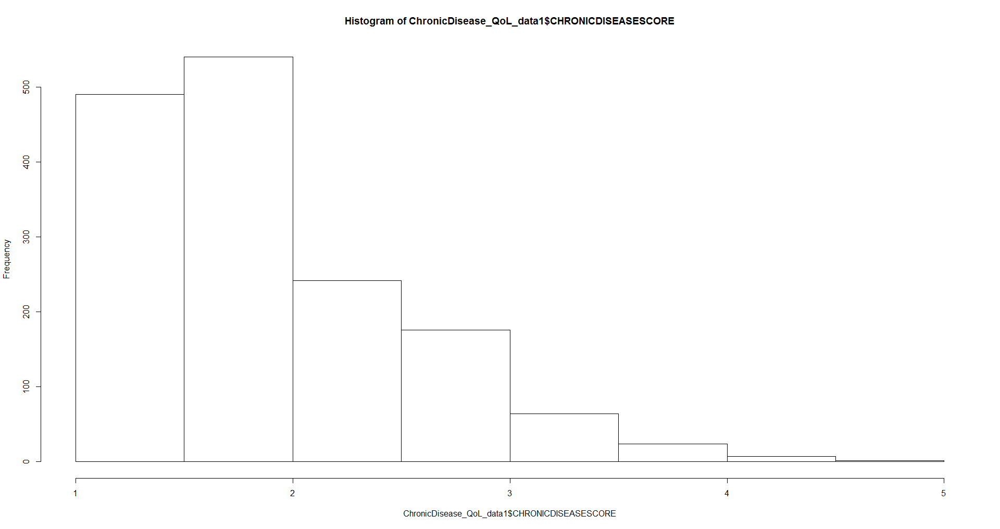
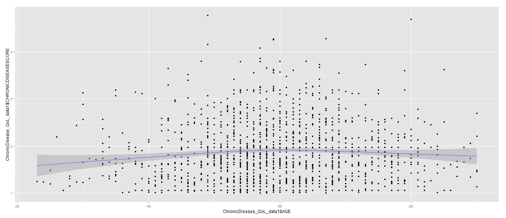
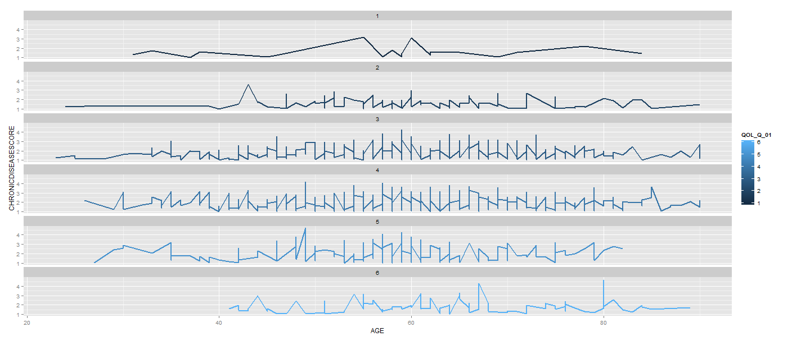

Winter 2018: HS 853
Scientific Methods for Health Sciences: Special Topics
(Take-home) Mid-Term Exam
- Due Fri, Mar 16, 2018
- Homeworks, projects and assignments
- Headers
- Reproduce and explain the following graphs:
- Among patients with chronic illness (CHRONICDISEASESCORE ≥ 1), are QoL scores (PROMIS-QOL scale) strongly correlated with comorbidity indices (provider-reported)?
- Is the Charlson Comorbidity Index strongly correlated with patient-reported symptom burden (MSAS-SF)?
|  Histogram of CHRONICDISEASESCORE for patients with disease score exceeding one. |
|  AGE vs. CHRONICDISEASESCORE |
|  AGE vs. CHRONICDISEASESCORE by QOL_Q_01 level |
Remember to include the HW header identifying you on top of your report. Also include an appendix with your complete R-code and other technical content. The table below summarizes some of the important variables you need to work with and the code snippet loades in the data directly into Rstudio.
ChronicDisease_QoL_data <- read.csv('https://umich.instructure.com/files/481332/download?download_frd=1', header=T); attach(ChronicDisease_QoL_data); head(ChronicDisease_QoL_data)
| Variable Class | Values | Data Elements |
| PROMIS-QOL (global quality of life) | 1 Excellent 2 Very good 3 Good 4 Fair 5 Poor 6 No answer (Patient refused) |
QOL_Q_01 Health rating QOL_Q_02 Quality of life rating QOL_Q_03 Physical health rating QOL_Q_04 Mental health rating QOL_Q_05 Satisfaction with social activities and relationships rating QOL_Q_06 Extent able to carry out everyday physical activities QOL_Q_07 Pain rating in the past seven days |
| (provider-reported) Charlson Comorbidity Index | Numeric 0-10 (-9 indicates missing score) | CHARLSON_SCORE [calculated using ICD9 codes from EMR for prior 3 months] |
| MSAS-SF (Memorial Symptom Assessment- Short Form) | 1 No, not at all 2 Yes, a little bit 3 Yes, somewhat 4 Yes, quite a bit 5 Yes, very much 6 No answer (Patient refused) |
MSA_Q_01 Lack of energy in the past week MSA_Q_02 Pain in the past week MSA_Q_03 Cough in the past week MSA_Q_04 Dry mouth in the past week MSA_Q_05 Nausea in the past week MSA_Q_06 Feel drowsy in the past week MSA_Q_07 Feel bloated in the past week MSA_Q_08 Vomiting in the past week MSA_Q_09 Shortness of breath in the past |
| Chronic Disease Score | Numeric 0-19 (-9 indicates missing score) | CHRONIC_DISEASE_SCORE [calculated using medication orders from EMR for prior 6 months] |
| See the complete variable definitions here. | ||